Low income (< $40,000) households
Analyses May 7
Well-being during shelter-in-place
Caregiver anxiety
Plots
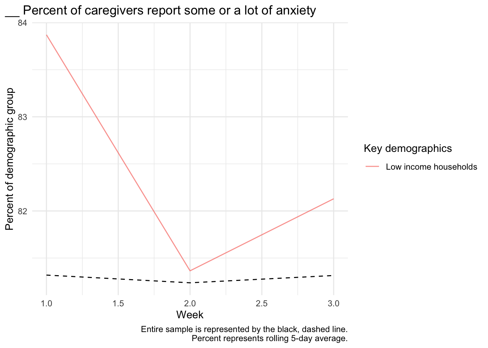
Test of slope
Weeks 1+
Baseline model
| Term | Coef | SE | t | p |
|---|---|---|---|---|
| Fixed effects | ||||
| (Intercept) | 49.41 | 2.18 | 22.64 | 0.000 |
| Week | -4.78 | 0.91 | -5.27 | 0.000 |
| poverty150 | -1.16 | 3.82 | -0.30 | 0.761 |
| Week:poverty150 | 2.56 | 1.64 | 1.56 | 0.119 |
| Random effects | ||||
| sd__(Intercept) | 27.12 | |||
| sd__Observation | 15.87 | |||
Can we explain the effect?
| Mediator | Coefficient (Income) | Coefficient of mediator |
|---|---|---|
| black | 2.19 | 2.42 |
| child_insurance | -1.87 | 2.58 |
| difficulty_basics | 0.90 | 2.78 |
| employment_decreased | 1.16 | 3.74* |
| income_decreaed | 1.68 | 2.42 |
| insurance | 1.19 | 2.79 |
| latinx | 0.58 | 2.56 |
| losejob_sickleave | 0.03 | 2.12 |
| lost_free_lunch | -2.70 | 2.56 |
| minority | -0.22 | 2.56 |
| support_decrease | -1.22 | 2.37 |
Week 0 to first response
Baseline model
| Term | Coef | SE | t | p |
|---|---|---|---|---|
| (Intercept) | 17.58 | 0.94 | 18.62 | 0.000 |
| poverty150 | -2.88 | 1.66 | -1.73 | 0.083 |
Can we explain the effect?
| Mediator | Coefficient (Income) | Coefficient of mediator |
|---|---|---|
| black | -2.13 | -2.74 |
| child_insurance | 4.72 | -2.60 |
| difficulty_basics | -0.16 | -2.84 |
| employment_decreased | 3.87* | -4.81* |
| income_decreaed | 3.07 | -3.53* |
| insurance | 2.86 | -2.56 |
| latinx | 1.34 | -2.84 |
| losejob_sickleave | 1.95 | -4.80* |
| lost_free_lunch | -0.79 | -2.88 |
| minority | -0.78 | -2.79 |
| support_decrease | 14.23* | -2.17 |
Caregiver depression
Plots
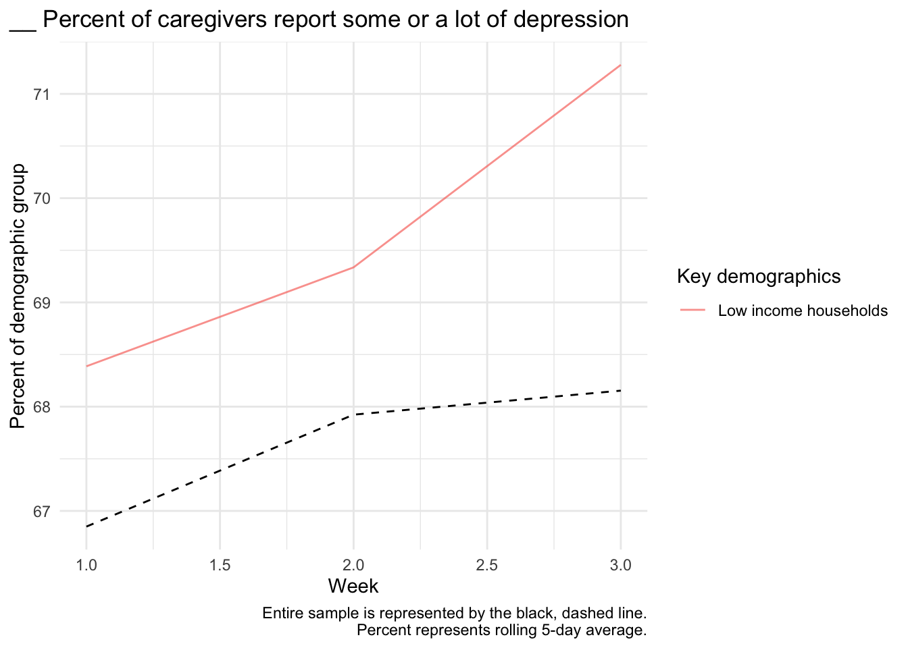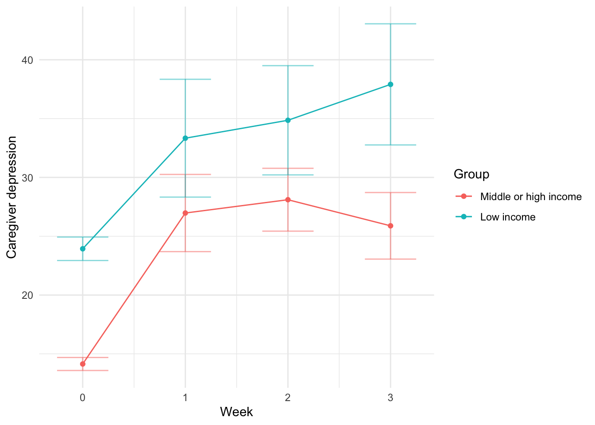
Test of slope
Weeks 1+
Baseline model
| Term | Coef | SE | t | p |
|---|---|---|---|---|
| Fixed effects | ||||
| (Intercept) | 28.35 | 1.91 | 14.84 | 0.000 |
| Week | -0.55 | 0.78 | -0.71 | 0.480 |
| poverty150 | 5.93 | 3.36 | 1.77 | 0.078 |
| Week:poverty150 | 1.59 | 1.41 | 1.13 | 0.260 |
| Random effects | ||||
| sd__(Intercept) | 25.92 | |||
| sd__Observation | 13.08 | |||
Can we explain the effect?
| Mediator | Coefficient (Income) | Coefficient of mediator |
|---|---|---|
| black | 0.50 | 1.52 |
| child_insurance | -4.19 | 1.47 |
| difficulty_basics | 0.08 | 2.19 |
| employment_decreased | 0.39 | 2.53 |
| income_decreaed | -0.09 | 1.78 |
| insurance | -0.49 | 1.47 |
| latinx | -0.25 | 1.49 |
| losejob_sickleave | -1.74 | 2.34 |
| lost_free_lunch | 3.31 | 1.60 |
| minority | 1.86 | 1.47 |
| support_decrease | -1.49 | 3.67 |
Week 0 to first response
Baseline model
| Term | Coef | SE | t | p |
|---|---|---|---|---|
| (Intercept) | 13.31 | 0.81 | 16.37 | 0.000 |
| poverty150 | -1.33 | 1.43 | -0.93 | 0.355 |
Can we explain the effect?
| Mediator | Coefficient (Income) | Coefficient of mediator |
|---|---|---|
| black | -2.42 | -1.20 |
| child_insurance | 2.51 | -1.16 |
| difficulty_basics | 4.70* | -2.46 |
| employment_decreased | 6.20* | -2.66 |
| income_decreaed | 6.45* | -2.41 |
| insurance | -0.78 | -1.39 |
| latinx | 0.48 | -1.25 |
| losejob_sickleave | 5.42* | -1.72 |
| lost_free_lunch | 0.77 | -1.32 |
| minority | -0.64 | -1.26 |
| support_decrease | 14.56* | -0.77 |
Caregiver stress
Plots
Test of slope
Weeks 1+
Baseline model
| Term | Coef | SE | t | p |
|---|---|---|---|---|
| Fixed effects | ||||
| (Intercept) | 61.91 | 2.35 | 26.39 | 0.0 |
| Week | -4.20 | 0.99 | -4.25 | 0.0 |
| poverty150 | -0.51 | 4.10 | -0.13 | 0.9 |
| Week:poverty150 | 2.93 | 1.78 | 1.64 | 0.1 |
| Random effects | ||||
| sd__(Intercept) | 27.18 | |||
| sd__Observation | 17.84 | |||
Can we explain the effect?
| Mediator | Coefficient (Income) | Coefficient of mediator |
|---|---|---|
| black | 1.42 | 2.81 |
| child_insurance | -4.25 | 2.86 |
| difficulty_basics | 0.81 | 3.18 |
| employment_decreased | -2.92 | 5.78* |
| income_decreaed | -0.34 | 3.25 |
| insurance | -1.32 | 2.87 |
| latinx | -1.17 | 2.80 |
| losejob_sickleave | -4.37 | 4.39* |
| lost_free_lunch | 9.66 | 3.12 |
| minority | 0.62 | 2.86 |
| support_decrease | -0.08 | 2.90 |
Week 0 to first response
Baseline model
| Term | Coef | SE | t | p |
|---|---|---|---|---|
| (Intercept) | 24.70 | 1.01 | 24.52 | 0.000 |
| poverty150 | -2.46 | 1.77 | -1.39 | 0.166 |
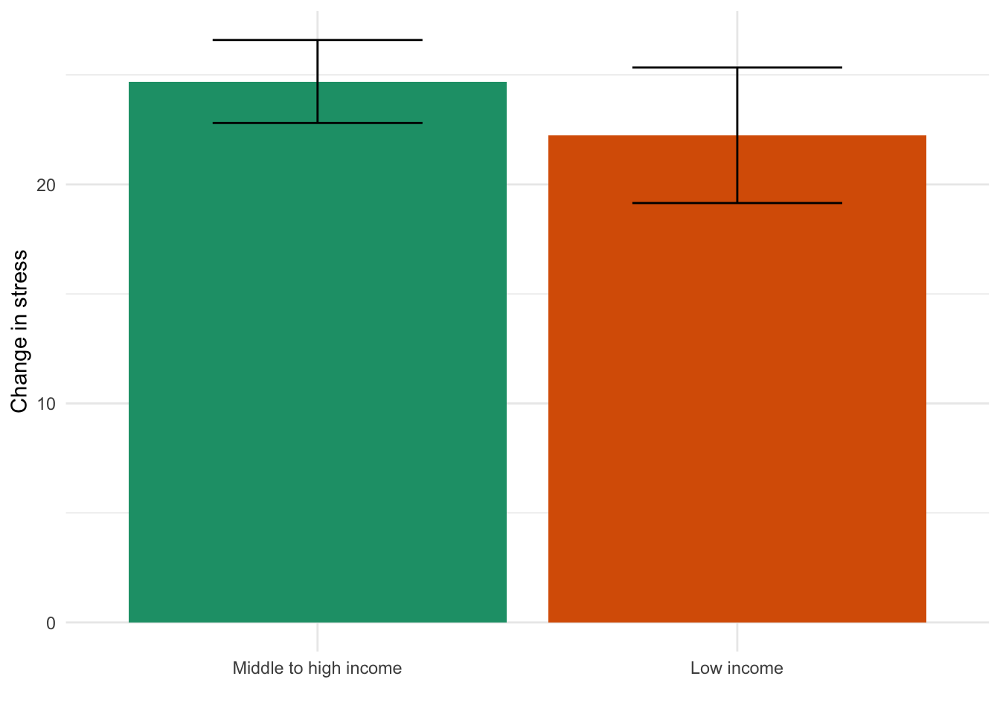
Can we explain the effect?
| Mediator | Coefficient (Income) | Coefficient of mediator |
|---|---|---|
| black | -3.73 | -2.19 |
| child_insurance | 4.89 | -2.16 |
| difficulty_basics | 5.21* | -3.72* |
| employment_decreased | 6.17* | -4.75* |
| income_decreaed | 7.28* | -3.74* |
| insurance | 6.27* | -1.72 |
| latinx | 2.25 | -2.81 |
| losejob_sickleave | 4.88* | -4.00 |
| lost_free_lunch | 0.53 | -2.46 |
| minority | 0.68 | -2.42 |
| support_decrease | 18.49* | -1.74 |
Caregiver loneliness
Plots
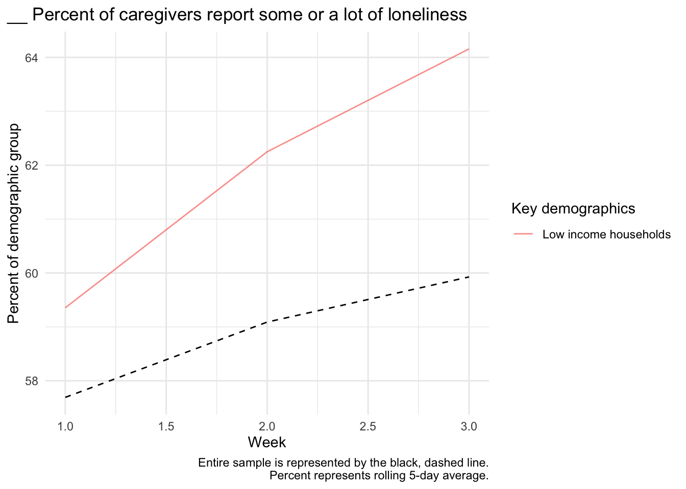
Test of slope
Weeks 1+
Baseline model
| Term | Coef | SE | t | p |
|---|---|---|---|---|
| Fixed effects | ||||
| (Intercept) | 41.65 | 2.08 | 19.99 | 0.000 |
| Week | -0.80 | 0.87 | -0.93 | 0.353 |
| poverty150 | 3.24 | 3.65 | 0.89 | 0.375 |
| Week:poverty150 | 1.70 | 1.57 | 1.09 | 0.278 |
| Random effects | ||||
| sd__(Intercept) | 25.94 | |||
| sd__Observation | 15.13 | |||
Can we explain the effect?
| Mediator | Coefficient (Income) | Coefficient of mediator |
|---|---|---|
| black | -3.12 | 1.90 |
| child_insurance | 2.73 | 2.02 |
| difficulty_basics | -0.03 | 2.01 |
| employment_decreased | 1.35 | 2.06 |
| income_decreaed | 0.35 | 1.85 |
| insurance | 2.61 | 2.09 |
| latinx | 5.96* | 1.10 |
| losejob_sickleave | 0.28 | 1.71 |
| lost_free_lunch | 2.83 | 1.58 |
| minority | 0.59 | 1.69 |
| support_decrease | -0.89 | 3.83 |
Week 0 to first response
Baseline model
| Term | Coef | SE | t | p |
|---|---|---|---|---|
| (Intercept) | 14.47 | 0.89 | 16.21 | 0.000 |
| poverty150 | -2.01 | 1.57 | -1.28 | 0.202 |
Can we explain the effect?
| Mediator | Coefficient (Income) | Coefficient of mediator |
|---|---|---|
| black | 1.77 | -2.02 |
| child_insurance | -1.90 | -2.10 |
| difficulty_basics | -0.59 | -1.86 |
| employment_decreased | 4.50* | -3.25 |
| income_decreaed | 5.11* | -3.02 |
| insurance | 1.61 | -1.80 |
| latinx | -3.79 | -1.50 |
| losejob_sickleave | 1.37 | -2.69 |
| lost_free_lunch | 14.52* | -1.99 |
| minority | -1.39 | -1.83 |
| support_decrease | 18.18* | -1.26 |
Child Externalizing
Plots
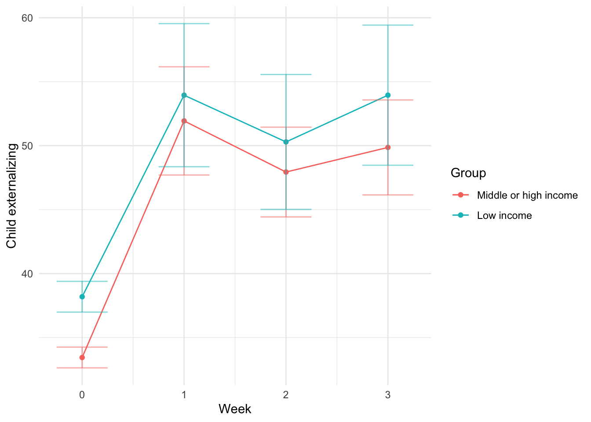
Test of slope
Weeks 1+
Baseline model
| Term | Coef | SE | t | p |
|---|---|---|---|---|
| Fixed effects | ||||
| (Intercept) | 50.94 | 2.63 | 19.34 | 0.000 |
| Week | -1.19 | 1.12 | -1.07 | 0.287 |
| poverty150 | 3.95 | 4.62 | 0.86 | 0.393 |
| Week:poverty150 | 0.39 | 2.02 | 0.19 | 0.846 |
| Random effects | ||||
| sd__(Intercept) | 29.11 | |||
| sd__Observation | 20.60 | |||
Can we explain the effect?
| Mediator | Coefficient (Income) | Coefficient of mediator |
|---|---|---|
| black | -3.78 | 0.64 |
| child_insurance | -4.73 | 0.31 |
| difficulty_basics | 4.55 | -0.41 |
| employment_decreased | 2.02 | 0.37 |
| income_decreaed | -1.67 | 1.01 |
| insurance | -1.77 | 0.41 |
| latinx | 0.48 | 0.20 |
| losejob_sickleave | -0.11 | 1.00 |
| lost_free_lunch | -1.74 | 0.44 |
| minority | 0.01 | 0.38 |
| support_decrease | 1.15 | 4.27 |
Child Internalizing
Plots
Test of slope
Weeks 1+
Baseline model
| Term | Coef | SE | t | p |
|---|---|---|---|---|
| Fixed effects | ||||
| (Intercept) | 21.47 | 2.47 | 8.70 | 0.000 |
| Week | 0.58 | 1.05 | 0.55 | 0.579 |
| poverty150 | 7.84 | 4.34 | 1.81 | 0.071 |
| Week:poverty150 | -1.25 | 1.90 | -0.66 | 0.512 |
| Random effects | ||||
| sd__(Intercept) | 25.80 | |||
| sd__Observation | 19.88 | |||
Can we explain the effect?
| Mediator | Coefficient (Income) | Coefficient of mediator |
|---|---|---|
| black | -1.11 | -1.19 |
| child_insurance | 1.42 | -1.30 |
| difficulty_basics | 8.53* | -2.73 |
| employment_decreased | 1.94 | -0.39 |
| income_decreaed | 2.10 | -1.48 |
| insurance | 2.12 | -1.16 |
| latinx | 5.73* | -1.89 |
| losejob_sickleave | -0.04 | -1.70 |
| lost_free_lunch | -0.20 | -1.29 |
| minority | 3.96 | -1.48 |
| support_decrease | -1.42 | 2.61 |
Week 0 to first response
Baseline model
| Term | Coef | SE | t | p |
|---|---|---|---|---|
| (Intercept) | 16.31 | 1.03 | 15.84 | 0.00 |
| poverty150 | 0.53 | 1.82 | 0.29 | 0.77 |
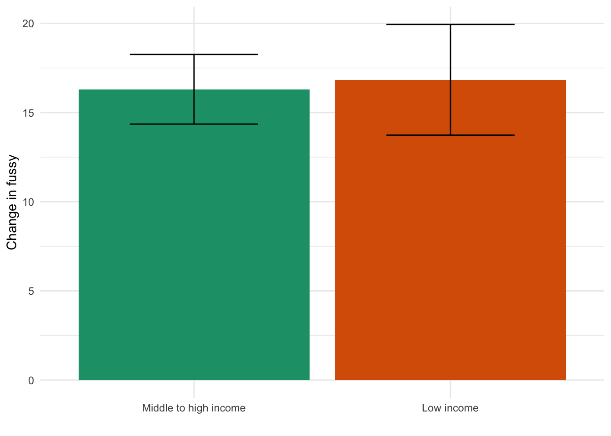
Can we explain the effect?
| Mediator | Coefficient (Income) | Coefficient of mediator |
|---|---|---|
| black | -6.59* | 0.92 |
| child_insurance | 5.12 | 0.83 |
| difficulty_basics | 2.97 | -0.17 |
| employment_decreased | 6.69* | -1.91 |
| income_decreaed | 8.00* | -0.90 |
| insurance | 5.32 | 1.18 |
| latinx | 7.06* | 0.17 |
| losejob_sickleave | 4.06 | -0.63 |
| lost_free_lunch | -7.66 | 0.53 |
| minority | -0.47 | 0.63 |
| support_decrease | 13.37* | 1.25 |
Analyses May 6
Well-being during shelter-in-place
Compared to general population
Caregiver anxiety
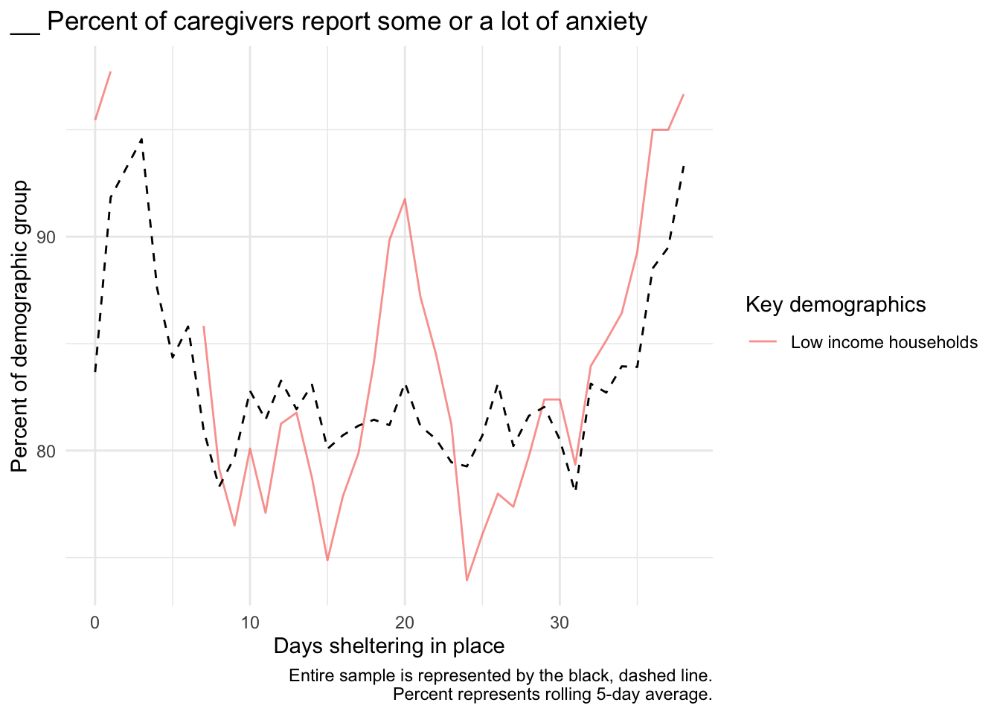
Caregiver depression
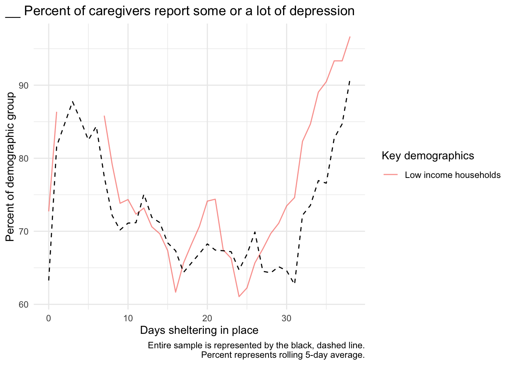
Caregiver stress
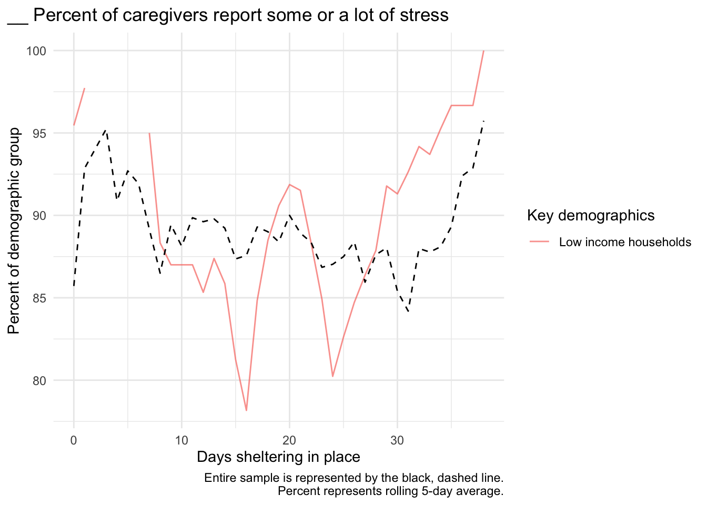
Caregiver loneliness
Child externalizing
Child internalizing
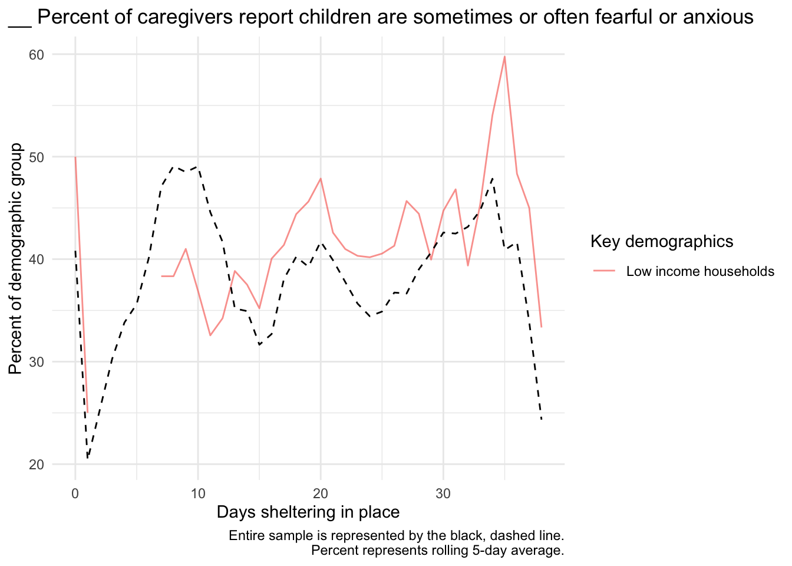
By geographic region
Caregiver anxiety

Caregiver depression

Caregiver stress

Child externalizing

Child internalizing

By childcare
Of these caregivers, 49 have non-family childcare and 434 do not.
Of these caregivers, 255 have family childcare and 228 do not.
By use of online resources
Education
Compared to general population
Parent education interrupted

Child education interrupted

By geographic region
By childcare
Of these caregivers, 49 have non-family childcare and 434 do not.
Of these caregivers, 255 have family childcare and 228 do not.
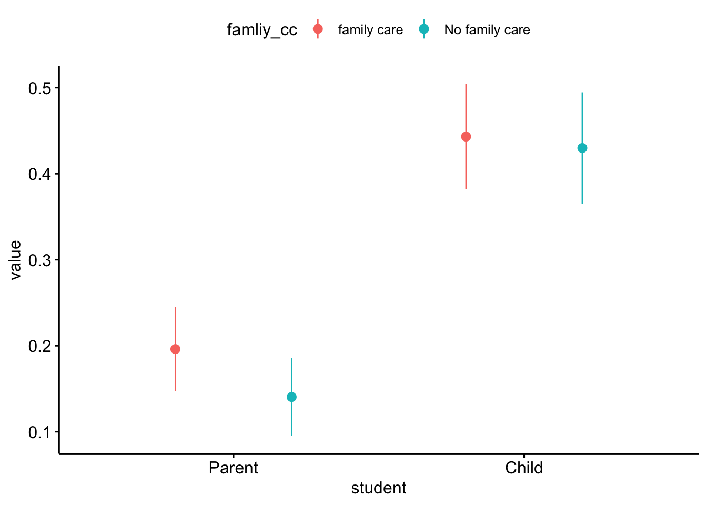
By use of online resources
Differences
Lost income
##
## Pearson's Chi-squared test with Yates' continuity correction
##
## data: week1$poverty150 and week1$income_decreaed
## X-squared = 29.781, df = 1, p-value = 4.836e-08## # A tibble: 2 x 4
## poverty150 n decreased_income percent
## <dbl> <int> <dbl> <dbl>
## 1 0 836 343 0.410
## 2 1 399 230 0.576Lost non-family childcare
##
## Pearson's Chi-squared test with Yates' continuity correction
##
## data: week1$poverty150 and week1$decrease_nonfamilyCC
## X-squared = 28.607, df = 1, p-value = 8.868e-08## # A tibble: 2 x 4
## poverty150 n decrease_nonfamilyCC percent
## <dbl> <int> <dbl> <dbl>
## 1 0 836 479 0.573
## 2 1 399 163 0.409Trouble paying for basics
##
## Pearson's Chi-squared test with Yates' continuity correction
##
## data: week1$poverty150 and week1$difficulty_basics
## X-squared = 112.37, df = 1, p-value < 2.2e-16## # A tibble: 2 x 4
## poverty150 n difficulty_basics percent
## <dbl> <int> <dbl> <dbl>
## 1 0 836 74 0.0885
## 2 1 399 132 0.331Delayed healthcare
##
## Pearson's Chi-squared test with Yates' continuity correction
##
## data: week1$poverty150 and week1$delay_healthcare
## X-squared = 5.6242, df = 1, p-value = 0.01771## # A tibble: 2 x 4
## poverty150 n delay_healthcare percent
## <dbl> <int> <dbl> <dbl>
## 1 0 836 495 0.592
## 2 1 399 265 0.664Testing predictors of well-being in this demo
| Outcome | Coefficient Estimate | Std. Error | p-value | Corrected p-value |
|---|---|---|---|---|
| Lost income since pandemic (N = 230) | ||||
| Caregiver anxiety | 2.99 | 2.83 | 0.291 | 1.000 |
| Caregiver depression | 6.03 | 2.77 | 0.030 | 1.000 |
| Caregiver stress | 8.52 | 3.01 | 0.005 | 0.283 |
| Child externalzing | 4.10 | 3.19 | 0.199 | 1.000 |
| Child internalizing | 0.44 | 3.19 | 0.891 | 1.000 |
| Lost employment since pandemic (N = 180) | ||||
| Caregiver anxiety | 8.95 | 3.05 | 0.004 | 0.220 |
| Caregiver depression | 9.98 | 2.98 | 0.001 | 0.061 |
| Caregiver stress | 7.74 | 3.33 | 0.021 | 1.000 |
| Child externalzing | 4.74 | 3.56 | 0.184 | 1.000 |
| Child internalizing | 3.09 | 3.51 | 0.380 | 1.000 |
| Have difficulty paying for basics (N = 132) | ||||
| Caregiver anxiety | 14.04 | 3.02 | 0.000 | 0.000 |
| Caregiver depression | 14.02 | 2.96 | 0.000 | 0.000 |
| Caregiver stress | 15.08 | 3.21 | 0.000 | 0.000 |
| Child externalzing | 6.57 | 3.44 | 0.058 | 1.000 |
| Child internalizing | 12.23 | 3.40 | 0.000 | 0.026 |
| Two or more children in household (N = 222) | ||||
| Caregiver anxiety | 1.55 | 3.18 | 0.627 | 1.000 |
| Caregiver depression | 3.44 | 3.16 | 0.277 | 1.000 |
| Caregiver stress | 4.12 | 3.34 | 0.220 | 1.000 |
| Child externalzing | 8.87 | 3.49 | 0.012 | 0.635 |
| Child internalizing | 4.09 | 3.45 | 0.236 | 1.000 |
| Three or more children in household (N = 116) | ||||
| Caregiver anxiety | 0.22 | 3.48 | 0.949 | 1.000 |
| Caregiver depression | 1.10 | 3.46 | 0.751 | 1.000 |
| Caregiver stress | 5.09 | 3.65 | 0.165 | 1.000 |
| Child externalzing | 8.40 | 3.83 | 0.029 | 1.000 |
| Child internalizing | 11.72 | 3.72 | 0.002 | 0.114 |
| Can access online serivices (N = 287) | ||||
| Caregiver anxiety | 7.81 | 3.14 | 0.014 | 0.722 |
| Caregiver depression | 9.19 | 3.07 | 0.003 | 0.185 |
| Caregiver stress | 7.57 | 3.35 | 0.025 | 1.000 |
| Child externalzing | 9.24 | 3.51 | 0.009 | 0.494 |
| Child internalizing | 12.92 | 3.50 | 0.000 | 0.019 |
| Can access telehealth serivices (N = 137) | ||||
| Caregiver anxiety | 9.32 | 2.87 | 0.001 | 0.087 |
| Caregiver depression | 11.77 | 2.78 | 0.000 | 0.002 |
| Caregiver stress | 6.14 | 3.09 | 0.048 | 1.000 |
| Child externalzing | 5.22 | 3.20 | 0.104 | 1.000 |
| Child internalizing | 9.20 | 3.21 | 0.005 | 0.263 |
| Single parents (N = 119) | ||||
| Caregiver anxiety | 2.20 | 3.38 | 0.516 | 1.000 |
| Caregiver depression | 4.47 | 3.35 | 0.183 | 1.000 |
| Caregiver stress | 5.26 | 3.56 | 0.141 | 1.000 |
| Child externalzing | -1.00 | 3.80 | 0.792 | 1.000 |
| Child internalizing | 7.15 | 3.71 | 0.055 | 1.000 |
| Child education interrupted (N = 159) | ||||
| Caregiver anxiety | -0.36 | 2.45 | 0.883 | 1.000 |
| Caregiver depression | 0.88 | 2.36 | 0.709 | 1.000 |
| Caregiver stress | 0.12 | 2.66 | 0.964 | 1.000 |
| Child externalzing | 0.27 | 2.74 | 0.923 | 1.000 |
| Child internalizing | 6.39 | 2.82 | 0.024 | 1.000 |
| Parent education interrupted (N = 37) | ||||
| Caregiver anxiety | -2.05 | 2.82 | 0.467 | 1.000 |
| Caregiver depression | -1.63 | 2.67 | 0.542 | 1.000 |
| Caregiver stress | -4.56 | 3.06 | 0.138 | 1.000 |
| Child externalzing | -3.67 | 3.10 | 0.239 | 1.000 |
| Child internalizing | -3.07 | 3.30 | 0.353 | 1.000 |
| Have delayed healthcare (N = 265) | ||||
| Caregiver anxiety | 9.23 | 2.91 | 0.002 | 0.110 |
| Caregiver depression | 8.22 | 2.85 | 0.004 | 0.251 |
| Caregiver stress | 11.99 | 3.09 | 0.000 | 0.009 |
| Child externalzing | 10.04 | 3.21 | 0.002 | 0.124 |
| Child internalizing | 11.94 | 3.23 | 0.000 | 0.018 |
| African American (N = 54) | ||||
| Caregiver anxiety | -5.86 | 4.61 | 0.205 | 1.000 |
| Caregiver depression | 1.03 | 4.60 | 0.823 | 1.000 |
| Caregiver stress | 1.87 | 4.87 | 0.701 | 1.000 |
| Child externalzing | -3.02 | 5.09 | 0.554 | 1.000 |
| Child internalizing | 5.69 | 4.98 | 0.254 | 1.000 |
| Latinx (N = 87) | ||||
| Caregiver anxiety | 2.40 | 3.83 | 0.532 | 1.000 |
| Caregiver depression | -3.09 | 3.82 | 0.419 | 1.000 |
| Caregiver stress | -0.94 | 4.03 | 0.816 | 1.000 |
| Child externalzing | 5.43 | 4.27 | 0.205 | 1.000 |
| Child internalizing | 0.41 | 4.21 | 0.922 | 1.000 |
| Caregivers of children with disabilities (N = 53) | ||||
| Caregiver anxiety | 6.26 | 3.84 | 0.104 | 1.000 |
| Caregiver depression | 10.56 | 3.70 | 0.005 | 0.268 |
| Caregiver stress | 5.33 | 4.12 | 0.197 | 1.000 |
| Child externalzing | 4.49 | 4.32 | 0.300 | 1.000 |
| Child internalizing | 20.39 | 4.38 | 0.000 | 0.000 |
| Essential employees (N = 116) | ||||
| Caregiver anxiety | 0.26 | 3.35 | 0.938 | 1.000 |
| Caregiver depression | -2.06 | 3.33 | 0.537 | 1.000 |
| Caregiver stress | -4.20 | 3.57 | 0.240 | 1.000 |
| Child externalzing | 0.10 | 3.78 | 0.978 | 1.000 |
| Child internalizing | -1.98 | 3.72 | 0.595 | 1.000 |
| Note: | ||||
| Coefficients estimated using a multi-level model in which responses are nested within caregivers. In the case of binary predictors, we report the number (N) of participants who fall into the category listed. p-values are adjusted using a Holm correction | ||||
Trends by income
Caregiver anxiety
Caregiver depression
Caregiver stress
Child externalizing
Child internalizing
Child Internalizing
Plots
Test of slope
Weeks 1+
Baseline model
| Term | Coef | SE | t | p |
|---|---|---|---|---|
| Fixed effects | ||||
| (Intercept) | 21.47 | 2.47 | 8.70 | 0.000 |
| Week | 0.58 | 1.05 | 0.55 | 0.579 |
| poverty150 | 7.84 | 4.34 | 1.81 | 0.071 |
| Week:poverty150 | -1.25 | 1.90 | -0.66 | 0.512 |
| Random effects | ||||
| sd__(Intercept) | 25.80 | |||
| sd__Observation | 19.88 | |||
Can we explain the effect?
| Mediator | Coefficient (Income) | Coefficient of mediator |
|---|---|---|
| black | -1.11 | -1.19 |
| child_insurance | 1.42 | -1.30 |
| difficulty_basics | 8.53* | -2.73 |
| employment_decreased | 1.94 | -0.39 |
| income_decreaed | 2.10 | -1.48 |
| insurance | 2.12 | -1.16 |
| latinx | 5.73* | -1.89 |
| losejob_sickleave | -0.04 | -1.70 |
| lost_free_lunch | -0.20 | -1.29 |
| minority | 3.96 | -1.48 |
| support_decrease | -1.42 | 2.61 |
Week 0 to first response
Baseline model
| Term | Coef | SE | t | p |
|---|---|---|---|---|
| (Intercept) | -25.52 | 1.26 | -20.23 | 0.000 |
| poverty150 | -0.13 | 2.23 | -0.06 | 0.953 |
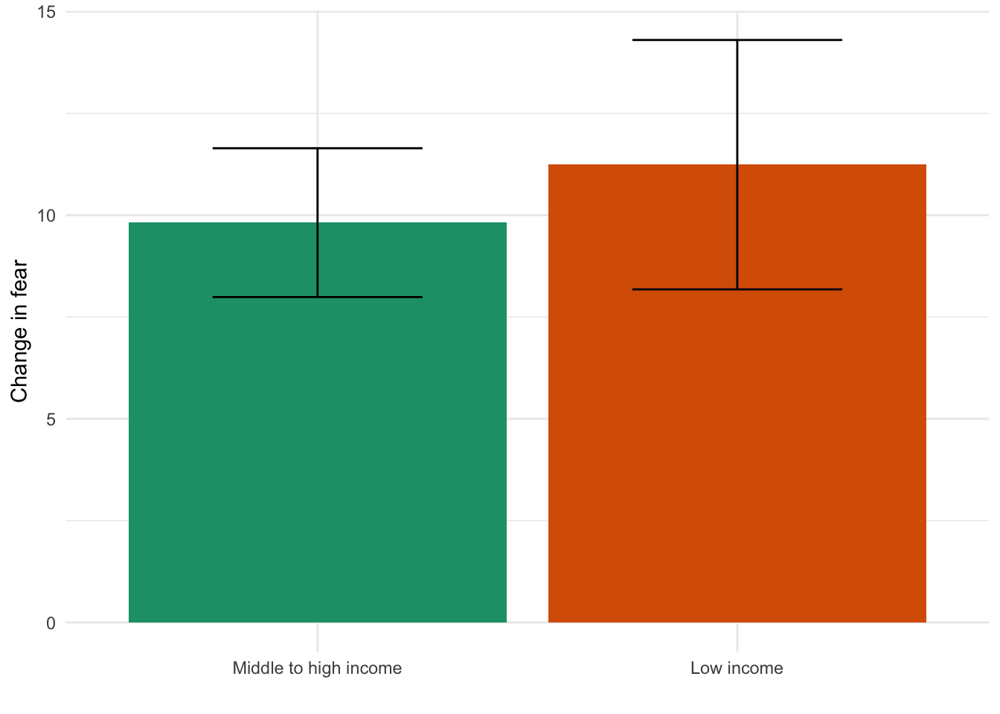
Can we explain the effect?
| Mediator | Coefficient (Income) | Coefficient of mediator |
|---|---|---|
| black | 11.22* | -0.59 |
| child_insurance | -10.24* | -0.80 |
| difficulty_basics | 5.83* | -1.49 |
| employment_decreased | 0.84 | 1.21 |
| income_decreaed | -4.49* | 0.55 |
| insurance | -12.86* | -1.79 |
| latinx | -4.95 | 0.28 |
| losejob_sickleave | 6.78* | 0.74 |
| lost_free_lunch | 8.83 | -0.13 |
| minority | 2.80 | -0.27 |
| support_decrease | -7.71* | -0.84 |